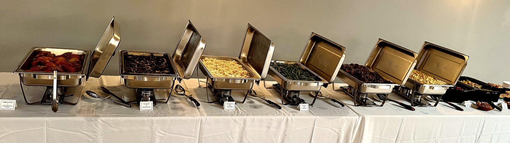

Buffalo, NY · Wedding Catering · Private Chef
Wedding food that actually lives up to the rest of the day.
Handmade food and full-room hospitality, brought to your venue by a private chef who has led restaurant openings from Texas to Morocco. Based in Buffalo and available across Western New York.
★★★★★
“You exceeded ALL of our expectations. Your food was incredible. I would expect that quality at a nice restaurant ordering individual meals, not at a buffet dinner.”
Kayleen H., Bride · Depew, New York
Why couples choose Charlie
Quality that holds when you're feeding a hundred.
Restaurant quality at scale
The hardest thing about wedding catering is keeping the food as good for the last plate as it was for the first. Charlie has managed this across weddings, large-format dinners, and full-room receptions. The food does not suffer because the guest count went up.
Handmade at the center
Pasta rolled by hand. Sauces built from scratch. Pizza dough made the day of. The things that are normally cut at scale are the things Charlie refuses to cut. Your guests will taste the difference, and they will ask who did the food.
He has managed the whole floor before
Charlie is not just a chef. He has led restaurant openings across North America and managed full hospitality operations where the kitchen was only one thing that had to go right. A wedding takes that same coordination. He has done it before.
You work directly with Charlie
No account manager. No handoff to a team you have never met. The person you speak with in January is the person behind your buffet in June. That continuity matters more than most couples realize until the day of the event.
Service approaches
Three formats, each quoted from scratch.
Every wedding is quoted individually. These are the three ways couples most often work with Charlie, from the most intimate to the most unexpected.
Intimate reception
The Seated Dinner
Coursed dinner service for receptions where the meal is the main event. Individual plates, controlled pacing, every course served at temperature. Typically 20 to 60 guests.
Coursed service · Handmade pasta · Custom menu
Full reception catering
The Full Room
Buffet stations or a combination of served dishes, built entirely around handmade food. This is the service behind the review above, the one where guests couldn't believe they were eating buffet food. Scales from 50 to 150+ guests without scaling down the quality.
Stations or buffet · Staffed service · Full room management
The unexpected choice
Wood-Fired Wedding
Wood-fired pizza as the reception centerpiece. Live fire, hand-stretched dough, and a dining experience your guests will not have seen at another wedding. Right for barn venues, outdoor receptions, and rehearsal dinners where you want the evening to feel genuinely different.
Wood-fired oven · Live fire service · Outdoor or indoor

Recent work
A 100-guest wedding built around handmade food.
Full-room buffet service for one hundred guests. Every dish made from scratch. The pork chops cut thick, stuffed by hand, and seasoned the morning of service. Plated for the whole room and treated like it was going to one table.
That is the standard every wedding receives, regardless of guest count. Read the full case study →
“It’s one thing to make a few meals and an entirely different thing to cook for 100.”
Wedding Client
How it works
How it works, from first call to service.
-
The initial conversation
You tell Charlie about your wedding. The venue, the vibe, the guest count, how important the food is to you. He asks questions. This is where the right fit becomes clear, before any commitment is made on either side.
-
Menu development and tasting
A menu is built around your occasion, the season, and what your guests will actually love eating. Then you eat it. You should know exactly what your guests are going to experience before they do.
-
Day-of execution
Charlie and the team arrive early. The food is made to order, not trucked in. Service is calm and professional from first course to last. The kitchen stays invisible and the service stays right. You enjoy your wedding.
Common questions
Things couples ask before they reach out.
- Do you do plated dinners or buffet service?
- Both. For intimate receptions, plated or coursed service is absolutely possible. For larger weddings, buffet stations built around handmade food can deliver results that genuinely surprise guests. The testimonial at the top of this page says it better than anything else could.
- How many guests can you accommodate?
- From 20 to 150 guests and beyond. The service approach scales with the guest count. The food quality does not scale down. Recent work includes a 100-guest wedding built entirely around handmade food and full-room service.
- How far in advance should we book?
- As early as possible. Peak season dates in Western New York, May through October, fill quickly. Six to twelve months advance notice is ideal for weddings. Reach out to check availability for your date before committing to a venue.
- Can you accommodate dietary restrictions and allergies?
- Yes. Menus are built around your guests. Gluten-free, vegetarian, and allergen-aware accommodations are worked into the planning process from the start, not added as a footnote afterward.
- Do you handle bar service or wine pairings?
- Wine pairings and bar coordination can be arranged where appropriate, with fully insured service. This is discussed during the planning conversation.
- Do you travel for destination weddings outside Buffalo?
- Yes. Crystalline Management serves couples across Western New York and travels for events that call for it. Ellicottville, Chautauqua, Niagara Falls, and further are all in range.
- Do you offer tastings?
- Yes. A tasting is part of the process for wedding engagements. You should eat what your guests are going to eat before they do.
- How is pricing structured?
- Every wedding is quoted based on guest count, service style, menu, and travel. There are no fixed packages or per-head price sheets. Contact to start a conversation and get a real number for your specific event.
Ready to talk
Your guests will talk about the food. Let's give them a reason.
Tell Charlie about your date, your venue, and what you're imagining. He'll tell you honestly whether it's a good fit and what it would take to make it happen.
Based in Buffalo, NY · Serving Western New York · Available to travel